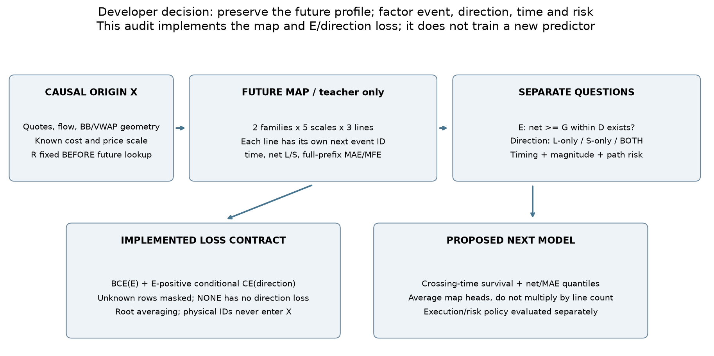
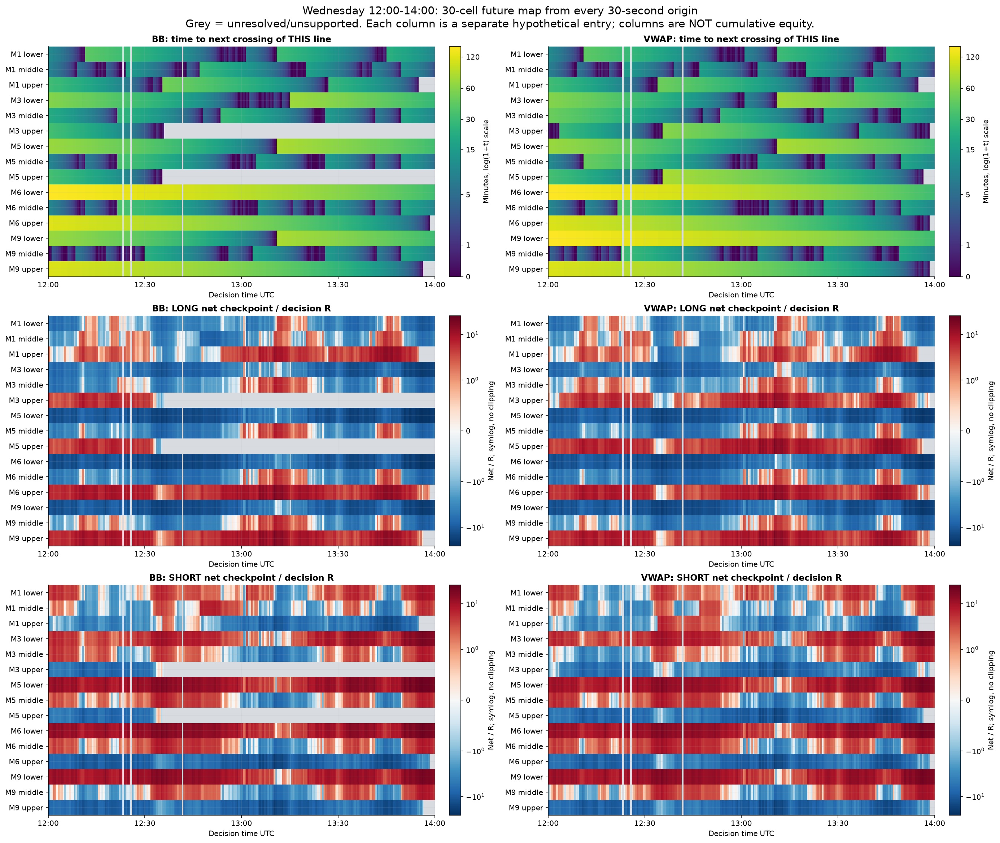
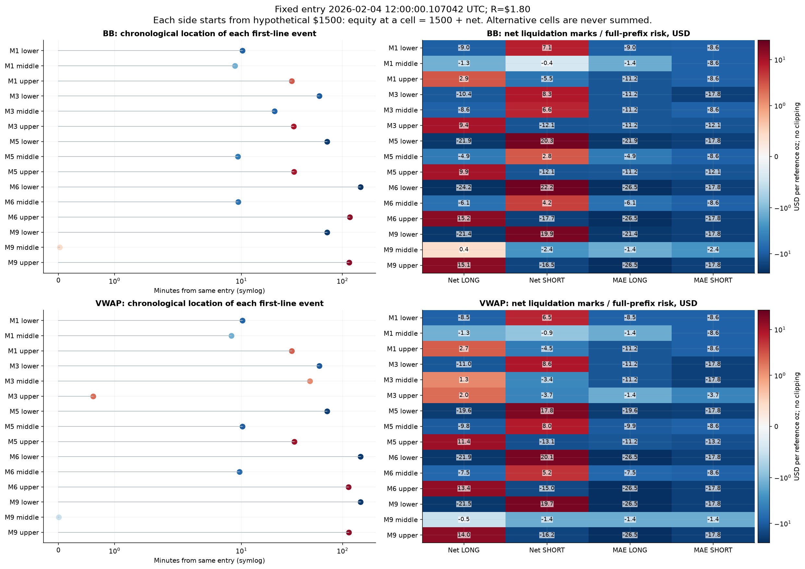
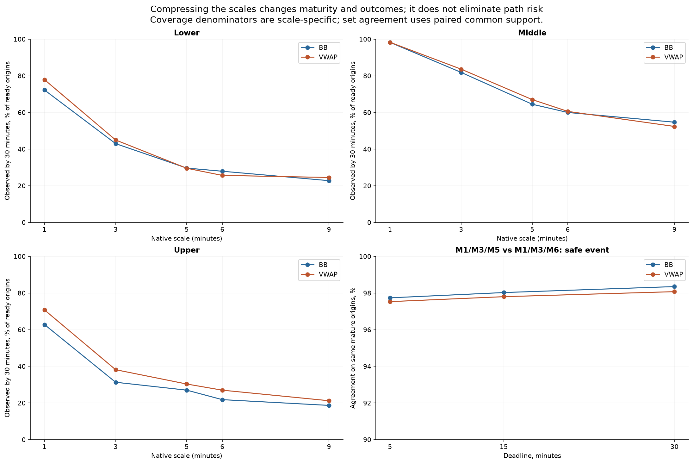
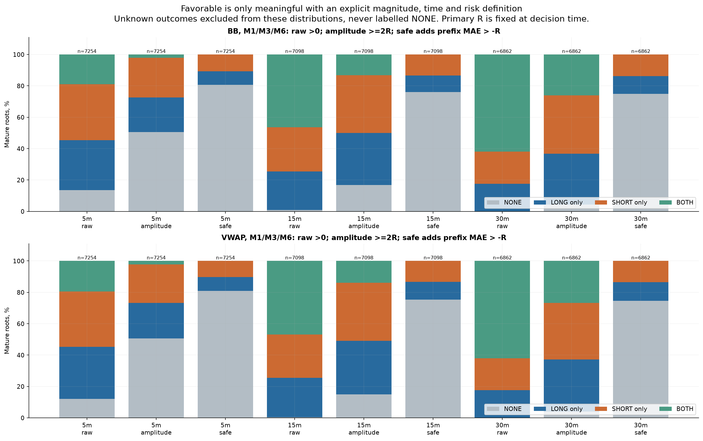
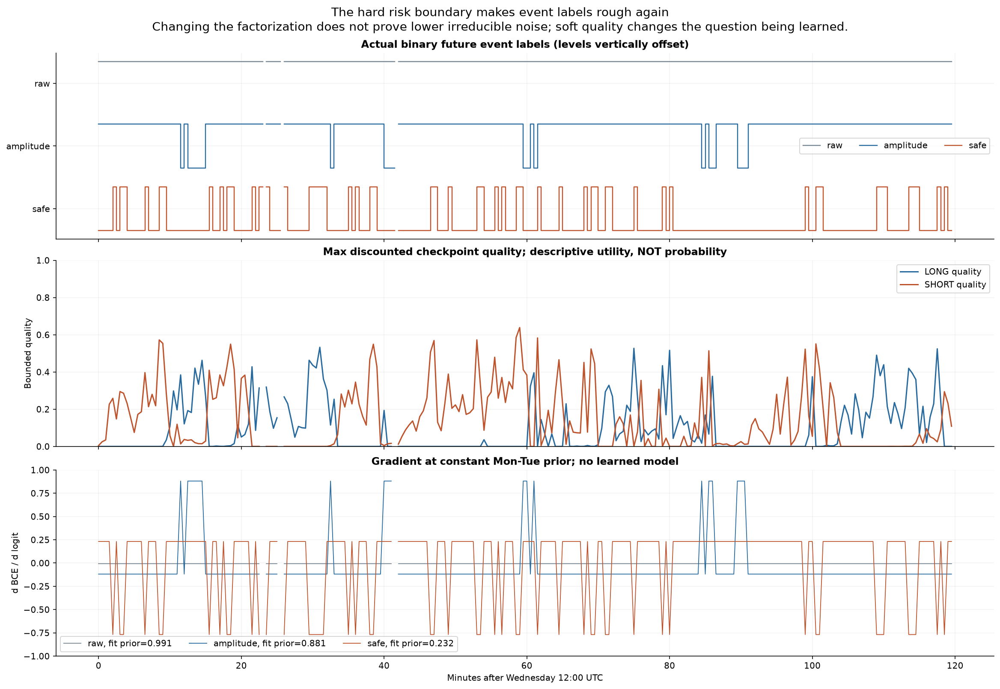
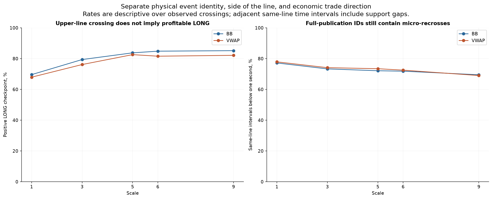

2–6 февраля 2026 · GCJ6 · 8,395 исходных точек · 251,850 ячеек · 198,549 физических событий BB/VWAP в банке.
В каждой точке теперь 30 ячеек: BB/VWAP × M1/M3/M5/M6/M9 × lower/middle/upper. Каждая ячейка ждёт своё первое пересечение после исполненного входа. Более раннее пересечение другой линии её не завершает. Фактическая карта продолжается до конца поддержанной сессии, без потолка 30 минут; горизонты 5/15/30 минут применяются только к определениям целей.
Геометрия: native SMA20±2 sample SD и trade VWAP±2 population SD, 19 завершённых native свечей + текущая. Полный порядок публикаций сохранён, включая разные публикации с одинаковыми ns. Вход — первая поддержанная цена после 100 ms, timeout 2 s; BUY ask, SELL bid; комиссия $0.30 за одну условную унцию. Equity состояния = условные $1500 + net mark. Это альтернативные оценки ликвидации, не сумма сделок и не equity работающей стратегии. Доступный выход с задержкой сохранён отдельно как net_exit; определения favorable ниже используют mark на crossing, не обещанный fill.
R=max(2×(spread решения+$0.30), 0.10×полуширина BB1 решения, $0.50); G=2R. Медиана R=$2.60; в 87.2% поддержанных точек R определяется нижним пределом по издержкам. Порог причинный и не подбирается по будущей прибыли.
| Горизонт | Определение | Полностью известных точек | Event | BOTH | Смена event за 30s |
|---|---|---|---|---|---|
| 5 мин | raw | 7,254 | 86.48% | 19.01% | 9.60% |
| 5 мин | amplitude | 7,254 | 49.46% | 2.16% | 17.56% |
| 5 мин | safe | 7,254 | 19.33% | 0.00% | 24.34% |
| 15 мин | raw | 7,098 | 99.00% | 46.37% | 0.94% |
| 15 мин | amplitude | 7,098 | 83.18% | 13.29% | 9.72% |
| 15 мин | safe | 7,098 | 23.99% | 0.00% | 28.87% |
| 30 мин | raw | 6,862 | 99.99% | 61.86% | 0.03% |
| 30 мин | amplitude | 6,862 | 95.73% | 26.09% | 3.61% |
| 30 мин | safe | 6,862 | 25.08% | 0.00% | 29.78% |
Таблица: BB, M1/M3/M6. raw: хотя бы одна отметка >0. amplitude: хотя бы одна отметка ≥G. safe: отметка ≥G и весь предыдущий MAE>−R. На горизонте 15 минут raw уже почти константа, а safe снова рваный. Разные сроки имеют разные maturity выборки. Здесь измерена стабильность целей, не их предсказуемость из X.
Мягкая вспомогательная оценка стороны: max по ячейкам до D от tanh(max(net,0)/R) × exp(−max(−MAE,0)/R) × exp(−delay/D). Она сохраняет магнитуду, риск и время. Это hindsight качество доступного пути, не вероятность выигрыша и не причинный выбор лучшего выхода. Точное значение max известно только при maturity всех включённых ячеек.
E=есть amplitude-возможность в пределах D. При E=1 направление имеет три состояния: LONG_ONLY, SHORT_ONLY, BOTH. При E=0 направление не обучается. BOTH означает две возможности на разных будущих участках пути, а не два одновременно прибыльных исполнения. Имя upper/lower и направление пересечения не подменяют денежную сторону сделки.
Реализован и проверен loss: BCE(E) + 1[E=1] CE(direction), с отдельными масками неизвестного event и неизвестного направления. Совместные вероятности согласованы: P(NONE)=1−pE; P(L/S/BOTH)=pE×p(direction|E). Это факторизация той же совместной вероятности, а не математическое доказательство, что задача стала легче. Максимальная ошибка численной проверки градиента 7.7e-11.
Для следующей модели к нему следует добавить условную survival времени crossings и квантили net/R и MAE/R. Усреднять головы карты по исходной точке, чтобы добавление соседнего масштаба не увеличивало её вес. Event ID применять для подсчёта повторных примеров только внутри FIT; сохранять временное разбиение и purge по maturity. Проверенные здесь physical IDs всё ещё дробят тиковые возвраты.
Отбор примеров. Для первого BCE/CE сравнения использовать одну и ту же полностью mature выборку положительных и отрицательных точек, как в распределениях этого отчёта. Ранний положительный witness позволяет знать E=1, но смешивание всех таких positives только с mature negatives может сместить обучение из-за зависимости наблюдаемости от исхода. Частичные наблюдения сохранять для явно заданного censor-aware likelihood. Полностью mature выборка также задаёт условную популяцию: её coverage и исключения нужно показывать. Правила зафиксированы в предложении для следующего обучения.
M5 соответствует примерно 100 минутам памяти, M6 — 120, M9 — 180; это не сроки выхода. Крупные outer-линии часто не достигаются за 30 минут. M5 увеличивает покрытие относительно M6, но не устраняет длинное ожидание.
На одинаковых mature точках наборы M1/M3/M5 и M1/M3/M6 совпадают по safe event на 15 минут в 98.0% случаев BB и 97.8% VWAP. Их конкретные времена/marks различаются; это не тождественные карты. Добавление M9 к M1/M3/M6 даёт 82 дополнительных safe-positive BB и 48 VWAP на 6,595 общих точках.
Рабочий выбор для следующего замороженного сравнения: M1/M3/M6 как основной набор короткой цели, M5 как отдельная альтернатива M6, M9 как дальний контекст и продолжение. Неделя не доказывает превосходство M6 над M5; одновременное добавление M5 и M6 не должно считаться независимым удвоением информации.







Распределения, coverage, сравнение масштабов · Банк и независимые проверки · Full-quote first-passage и тесты · Точные IDs и времена показанного входа · Аудит Sol 6.1
Новая предсказывающая модель в этом опыте не обучалась. Все пять дней уже исследовались. Выводы — проектирование таргета и loss, а не подтверждение обучаемости, прибыли или допуска к торговле. Данные сохранены в data/derived/crossing_map_target_v1; исходные BB/VWAP опыты не изменены.